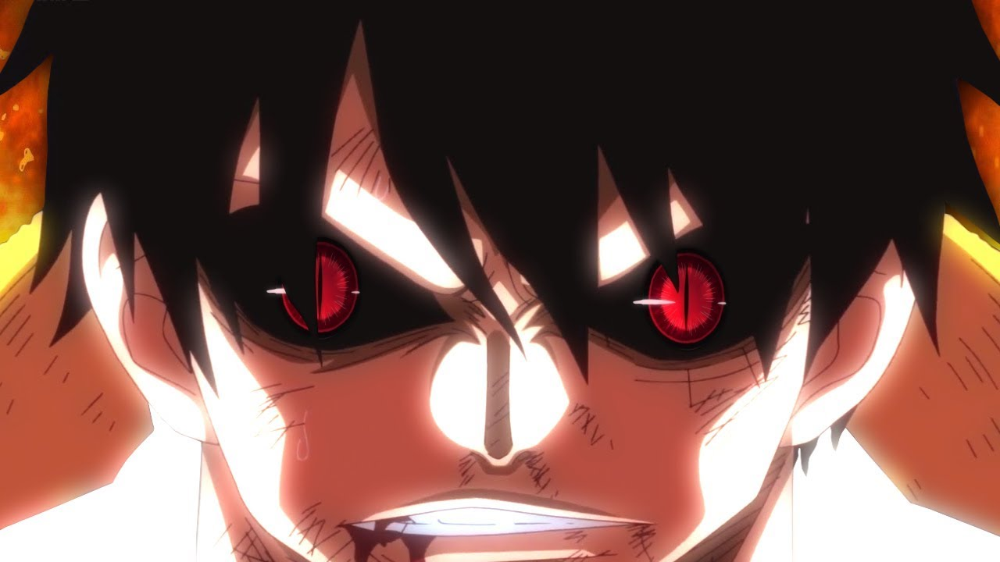
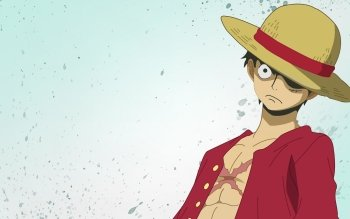
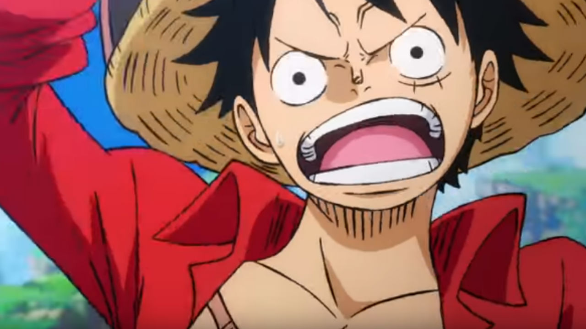
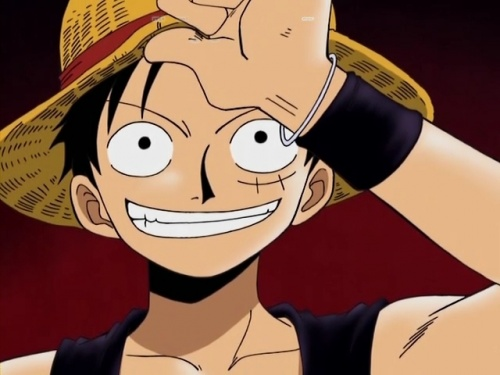
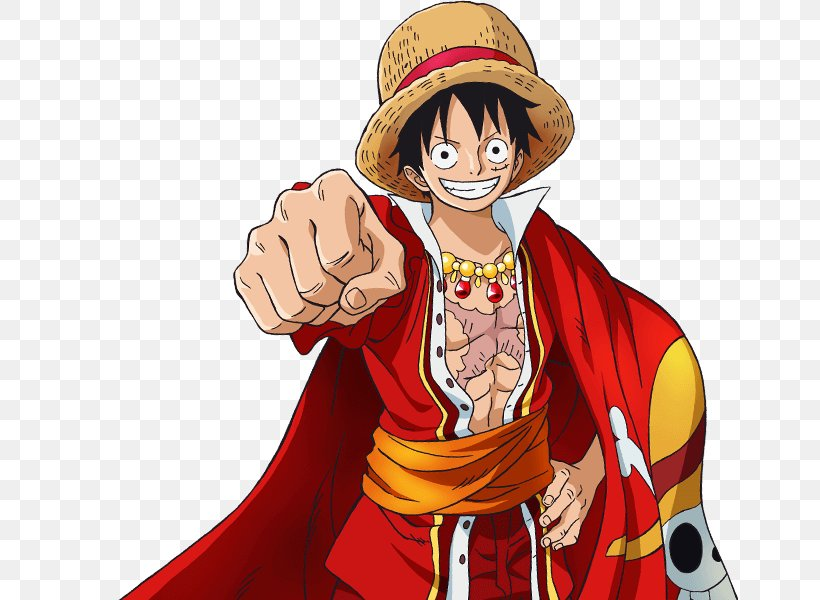
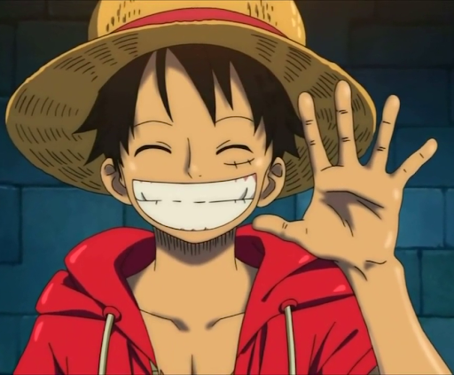

luffy


- Monkey D. Luffy Moni Di Rufi, surnomme de maniere recurrente Luffy au chapeau de paille Mugiwara no Rufi), est un personnage de fiction et principal protagoniste de la franchise japonaise One Piece creee par Eiichiro Oda. Il est intronise en tant que garcon possedant une puissance elastique, une faculte qu'il a developpee apres avoir mange un fruit du demon1. Il est le fondateur et le capitaine de l'equipage de Chapeau de paille. Son reve de toujours est de devenir le roi des pirates en trouvant le tresor legendaire, le One Piece, laisse par le defunt roi des pirates, Gol D. Roger. Selon lui, le roi des pirates est l'homme le plus libre du monde. Apres ses actions sur Totto Land et contre l'Empereur Big Mom, il est actuellement considere par la presse mondiale comme le 5e Empereur.
- Il est le fils du chef de l'armee revolutionnaire, Monkey D. Dragon, ainsi que le petit-fils paternel du heros de la Marine, Monkey D. Garp. Il est aussi le frere adoptif de l'ancien capitaine de la 2e flotte de l'equipage de Barbe Blanche, le defunt Portgas D. Ace, et du chef d'etat-major de l'armee revolutionnaire, Sabo.
- Luffy est mondialement connu dans le monde de One Piece en tant que fauteur de troubles, comme lorsqu'il defie les Grands Corsaires, la Marine et les Quatre Empereurs, et lorsqu'il commet des actions jugees menacantes par le Gouvernement mondial. En outre, dans la majorite de ces combats, il en est sorti vainqueur. Il a egalement acquis la reputation d'etre "imprudent" et, dans certains cas, 'fout', comme lors de l'incident a Enies Lobby, son attaque sur un dragon celeste sur l'archipel des Sabaody, l'incident d'Impel Down et sa participation a la bataille de Marine Ford. Il est donc tristement celebre pour etre le seul pirate connu a non seulement deliberement attaquer les trois installations gouvernementales les plus importantes, mais aussi a reussir a s'echapper vivant en y affrontant des adversaires incroyablement puissants. Le fait qu'il ait frappe un dragon celeste en connaissance de cause et la portee de son heritage a valu a Luffy d'etre qualifie d'element futur dangereux par le Gouvernement mondial et l'amiral-en-chef Sakazuki.
-
Apres les evenements de Totto Land, les actions de Luffy ont encore grandi sa reputation. Les journaux ont revele sa relation fraternelle avec Sabo, la flotte qui s'est officieusement formee sous ses ordres, son operation d'infiltration sur le territoire de Big Mom ou il a vaincu deux des generaux sucres, Charlotte Cracker et Charlotte Dent-de-chien, sa tentative d'assassinat echouee contre l'imperatrice, sa destruction involontaire du chateau de cette derniere et l'alliance avec les Germa 66, l'equipage des pirates du Soleil et l'equipage de Fire Tank, avant de s'echapper de Totto Land. Bien que ses actions aient ete legerement exagerees par la presse, il est desormais officieusement considere comme le 5e Empereur.
-
Ces actes ont conduit le Gouvernement mondial a le mettre a prix pour 1 milliard et 500 millions de Berrys. Ayant une prime de 300 millions de Berrys avant son arrivee sur l'archipel de Sabaody, Luffy fait partie de la Generation Terrible.
-
En tant que protagoniste, Luffy apparait dans la majorite des episodes (normaux et speciaux), films et OAV de l'anime One Piece, ainsi que dans un grand nombre de jeux video derives de la serie. a la suite de la popularisation internationale de la serie, Luffy est devenu l'un des personnages les plus reconnaissables et iconiques du monde manga/anime. En dehors de la franchise One Piece, Luffy a egalement fait une apparition dans le manga intitule Cross Epoch. Il a egalement ete sujet a de nombreuses parodies et a particulierement influence la culture populaire japonaise. L'accueil du personnage dans les medias est majoritairement positif et a ete reconnu comme l'un des plus grands personnages d'anime/de manga de tous les temps.



